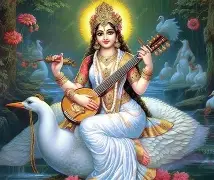

SARASWATI PUJA

Here are 10 important points about Saraswati Puja:
- Saraswati Puja worships Goddess Saraswati, the deity of knowledge, wisdom, music, and learning.
- It is mainly celebrated by students, teachers, and artists with great devotion.
- Books, musical instruments, and pens are placed near the goddess for blessings.
- People wear yellow clothes, symbolizing energy, learning, and prosperity.
The festival inspires learning, creativity, discipline, and respect for education.